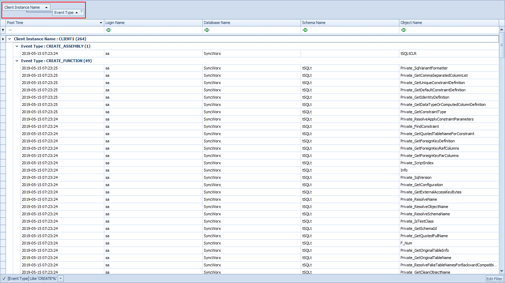

Grid Control Overview
The Conductor4SQL grid controls is an advanced tabular data view control with advanced grouping and filtering functionality
The Data Grid Control has 5 major features:
-
Column Rearranging and sizing
-
Column Sorting - Re-ordering the data by one or more columns
-
Column Filtering - Limiting the number of rows displayed using a filter
-
Column Grouping - Grouping the data by one or more columns
-
Column Chooser - Adding columns and removing unwanted columns
Most features can be activated/deactivated by right clicking on any column heading and activating the Column Context Menu

Column Rearranging and sizing
Reordering
One can change the column ordering by simply dragging the column headings to a new position
Resizing
Columns can be resized by clicking on and dragging the line between the column headings.
Alternatively columns can also be resized by using the following options in the Column Context Menu Best Fit - Adjust the selected column to that all its data is visible Best Fit (all columns) - Adjust all columns in such a way that the most row data is visible at once.
Sorting
Clicking on any column heading will sort by this column.
Alternatively you can right click on the column heading and select either the Sort Ascending or Sort Descending Option
Filtering
Using the Filter Editor
You can filter all grids in Conductor4SQL by using the Edit Filter button on the far right bottom corner of the grid.
This will open the screen below.
Add filters as you would like, then click on the Ok button to apply the filters.
Using the Auto Filter Textboxes
A quicker way is to filter using the Auto Filter Textboxes at the top of each column.
Using the Find panel
Select the Show Find Panel item in the Column Context Menu
Type any search criteria in the Find Panel and this filter will be applied to ALL visible columns
Using the column filter icon
If you hover over any column heading a column filter icon will appear. If you click on this icon an filter drop down list will appear
Grouping
Column data can be grouped by specific columns.
When grouping on a column the group row is in the following format: {Column Caption}: {Group Text}
Click on the Show Group By Box column heading context menu to show the Group By Box.
Then drag the columns you want to group to the grouping panel (the Grouping Panel is the panel with the "Drag a column here to group by that column" text)

Column Chooser
Unwanted columns can be removed by dragging them out of the window (or using the Hide This Column context menu item).
Accidental column removals can be re-added using the Column Chooser context menu item